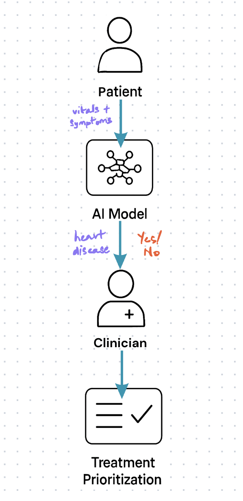
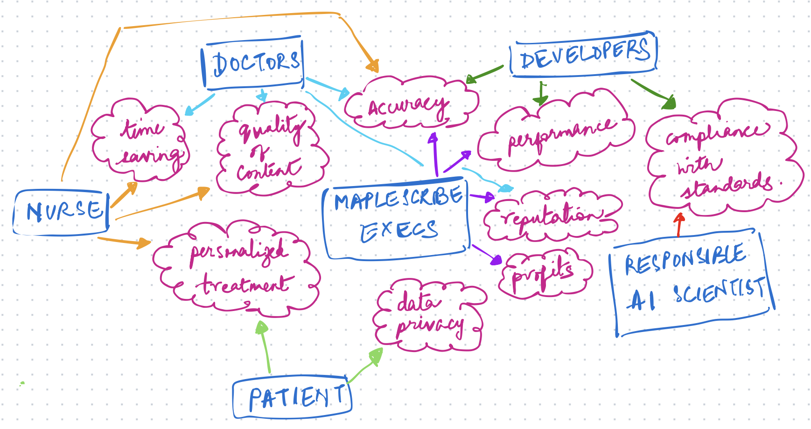
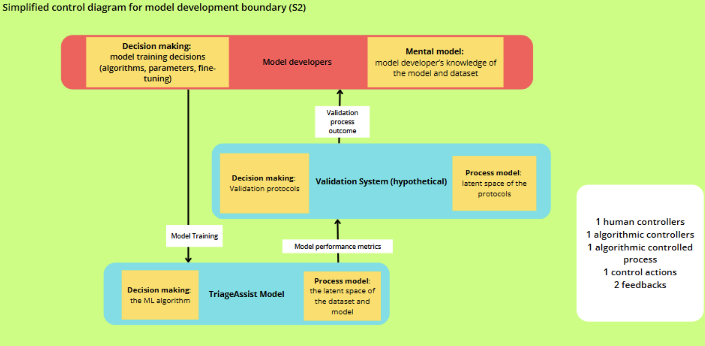
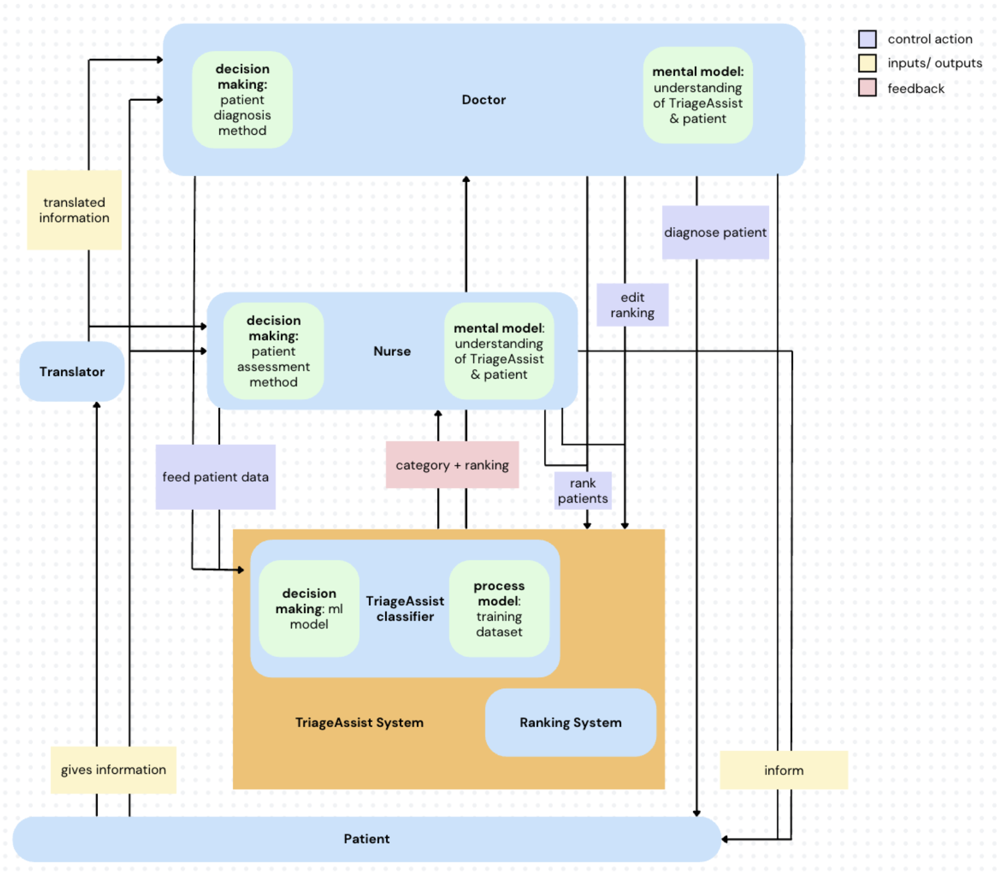
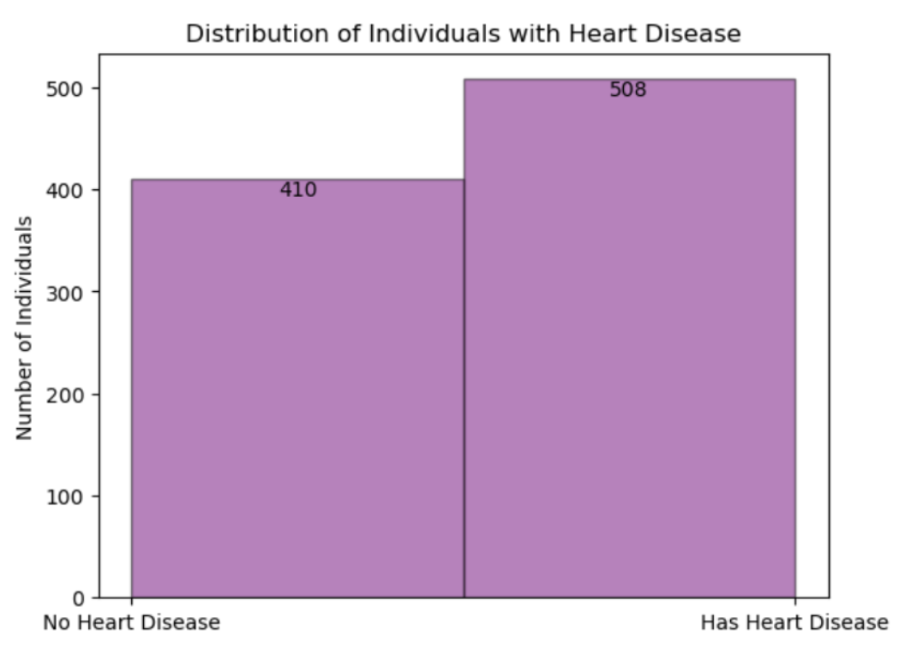
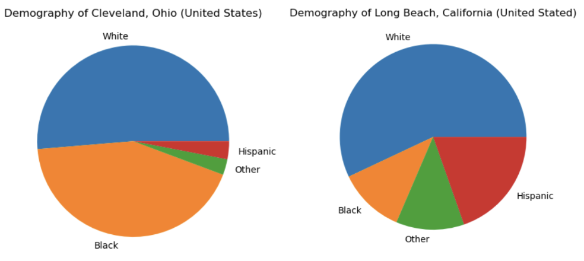
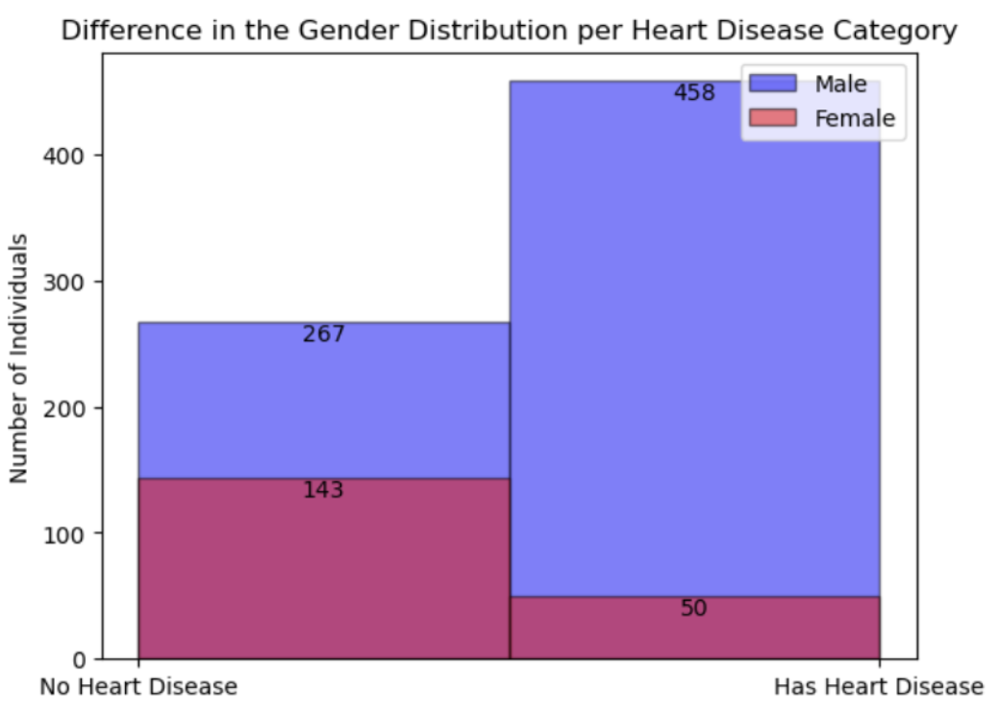
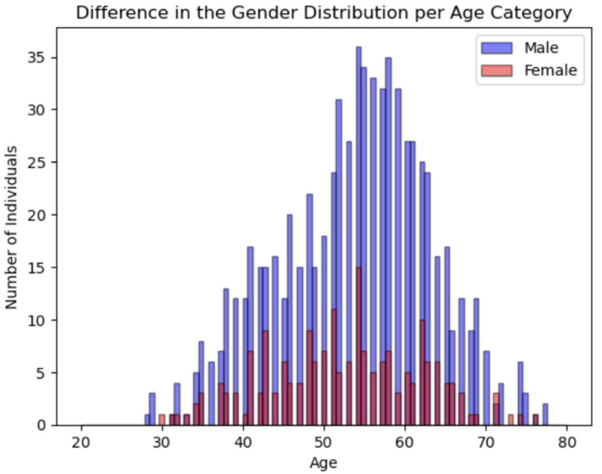

Case Study: TriageAssist (an AI-Assisted Patient Triage System)
Problem
AI triage recommendations can be biased, opaque, and over-trusted.
Hospitals face high patient volumes and limited clinician time. AI-assisted triage is a promising way to support faster, more consistent decisions, but deploying it without scrutiny risks biased training data, unexplainable outputs, and clinicians over-trusting automated recommendations without adequate review.
Process
- Map — identified stakeholders and potential losses via a stakeholder-values map.
- Trace — modeled system interactions and failure pathways across model development and clinical use.
- Audit — analyzed the training dataset for demographic and class imbalances.
- Assess — applied PHASE (STPA) methodology to systematically surface hazards across data, model, and clinical use.
- Recommend — translated findings into concrete UX and governance recommendations.
Approach
Conducted a systematic PHASE (STPA) risk assessment of TriageAssist's full pipeline — from training data to clinical deployment — surfacing hazards other review methods miss and translating them into actionable design recommendations.
Results
Overview
TriageAssist is an AI-based decision-support tool that helps clinicians prioritize patients by analyzing vital signs and symptom patterns using machine learning models. I applied the PHASE STPA methodology to systematically identify hazards, biases, and design constraints in the system, assessing dataset quality, model performance, and user interaction risks to inform safer, fairer, and more reliable triage recommendations.

How does it fit in medical settings..?
Conventionally, clinicians assess patients based on their vitals, symptoms, and medical history to decide treatment priorities.
This process is highly dependent on human judgment, which can be affected by fatigue, high patient volume, or incomplete information.
An AI-Triage system can analyze patient data in real time to flag risk levels and suggest priority cases.
It can act as a decision-support tool, providing clinicians with alerts or recommended next steps while leaving final judgment to medical staff.
Data Curation
Examining training datasets for quality, completeness, and biases that may affect system accuracy and fairness.
Model Development
Understanding how model design and development decisions can introduce risks.
Clinical Usage
Evaluating how TriageAssist is used by clinicians in hospitals and the implications for patient care and safety.
Methodology : STPA PHASE
Understanding Stakeholders
To start off, I identified all key stakeholders, direct and indirect, involved with the AI system — such as developers, clinicians, patients and so on — mapping out their expectations, values, and potential losses.
To visualize this, I created a stakeholder-values map which helped me realize the kind of losses each stakeholder could potentially experience due to the system.

Mapping System Interactions and Failure Pathways
After identifying potential losses, the next step was to trace how those failures could actually happen. This led me to investigating various interactions between system stakeholders, the system and its components.


By carefully tracing these interaction points, I was able to identify risk scenarios — specific ways in which the system could lead to negative outcomes due to stakeholder actions or system limitations.
Analysing Dataset
In this step, I analyzed the training dataset to uncover representation gaps and imbalances across demographics and conditions. This helped identify potential sources of bias that could affect how the AI system performs in real-world clinical settings.

More datapoints for 'has heart disease' cases compared to 'no heart disease' cases, leading to class imbalance.

Underrepresentation of several minority groups; dataset is dominated by White patients.

Male patients are overrepresented. Among 'has heart disease' cases, males account for significantly more datapoints than females.

Patients under 40 are underrepresented, despite a growing number of heart disease cases in this group.
Key Risks Identified
Biases in Training Data
Unfair outcomes across patients.
Prediction Inaccuracy
Incorrectly classifying critical patients as not having heart disease.
Over-Reliance
Clinicians trusting AI without adequate review.
Lack of Explainability
No provision of justification for results.
Outdated Model
Model fails to reflect new medical knowledge and patterns.
Poor UI/UX
Absence of user feedback, input validation, and error alerts, increasing risk of undetected mistakes.
My Learnings
Even simple user interactions with a system can reveal critical vulnerabilities when carefully examined.
Scrutinizing a system through multiple stakeholder perspectives uncovers risks that may otherwise go unnoticed.
Importance of continuous, iterative design for a successful product